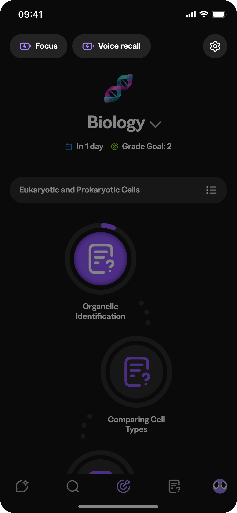

Plays once, on load — matches "only animate once." The arrowhead is a hand-built open chevron approximating Figma's native "Arrow lines" end cap: that cap is rendered internally by Figma and isn't exposed as editable path data through the plugin API, so it isn't a pixel-exact transcription the way the curve itself is (real vectorNetwork vertices/tangents from Vector 1, 13651:2316).